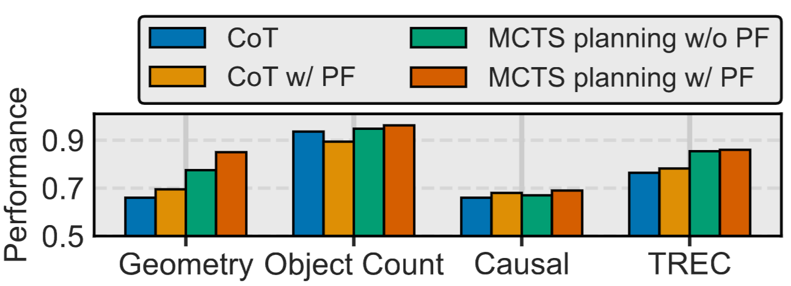
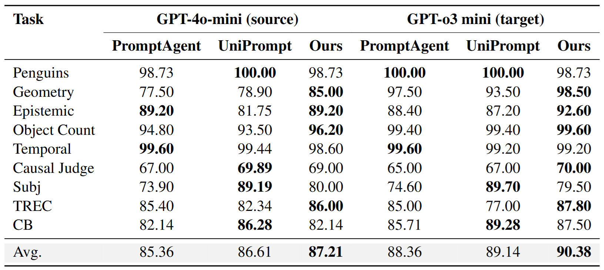

|
ProtoPrompt: Multi-perspective Prompt Optimization via Prototypical Feedback Submitted to EACL (2024.09 — 현재) 기여도: 70% 기획
80%
개발
60%
실험
60%
분석
80%
|
초록대규모 언어모델(LLMs)은 다양한 자연어 처리(NLP) 과제에서 우수한 성능을 보여왔지만, 그 효과는 여전히 프롬프트 설계에 매우 민감하게 의존한다. 이러한 문제를 해결하기 위해 자동 프롬프트 최적화(Automated Prompt Optimization, APO)가 유망한 연구 방향으로 주목받고 있다. 기존의 APO 접근법들은 주로 자연어 피드백을 활용해 프롬프트를 개선하지만, 각 단계가 단일한 관점에 의존하는 경향이 있다. 이러한 제한된 시각은 기본 LLM이 특정 관점에 편향되도록 만들어, 단계별 추론 과정과 전체 탐색 절차 모두에서 과적합과 비효율성을 초래하며, 결과적으로 계산 비용을 증가시킨다. 본 논문에서는 이러한 한계를 극복하기 위해 ProtoPrompt라는 새로운 방법을 제안한다. ProtoPrompt는 몬테카를로 트리 탐색(Monte Carlo Tree Search, MCTS)과 원형(prototypical) 피드백 메커니즘을 결합하여, 최적화 LLM이 다양한 관점을 생성하고 그중 가장 대표적인 피드백을 식별할 수 있도록 한다. 이를 통해 기본 LLM은 탐색 과정 전반에 걸쳐 보다 풍부하고 균형 잡힌 피드백을 받을 수 있다. 6개의 BIG-Bench 벤치마크와 3개의 일반 자연어 이해(NLU) 벤치마크에서 수행한 실험 결과, ProtoPrompt는 강력한 기존 기준 모델들 대비 최대 1.64%의 성능 향상과 함께, 더 빠른 수렴 속도(적은 반복 횟수) 및 18.19%의 전체 비용 절감을 달성한다. |
배경Prototypical Feedback (PF) 연구의 동기가 되는 실험을 수행했습니다. 한 개의 자연어 Exemplar가 주어진 채 추론 하는 CoT 셋팅을 초기 비교군으로 설정하였습니다. 이때, Exemplar를 다양하게 변형해보았습니다. Exemplar 내 구체적인 정보를 일반화시켜 변형했을 때, 대부분의 task에서 소폭적으로 성능 향상을 관측할 수 있었습니다. 그러나 성능 하락이 관찰된 경우도 있었는데 이것을 수동으로 Exemplar를 설정한 문제라고 보았습니다. 따라서, 이번에는 자연어 Feedback을 활용하는 자동 프롬프트 최적화 방법(MCTS)에서 실험해보았습니다. 그 결과, 대부분의 task에서 성능 향상이 있었습니다. 하지만, 오히려 하락한 task의 경우도 관찰되었습니다(Causal). 그 원인은 LLM이 생성한 Feedback내 구체적인 정보가 MCTS를 방해했기 때문이라고 생각했습니다. 따라서 MCTS에 PF를 적용하게 되었고, 그 결과, 모든 task에서 일관적인 성능 향상이 관측되었습니다.

|
방법 설계
LLM의 프롬프트를 자동으로 탐색하고 최적화하기 위한 구조로 설계했습니다. 단순히 하나의 프롬프트를 수정하는 것이 아니라, 탐색(Search)–평가(Evaluation)–갱신(Update)의 반복을 통해 점진적으로 더 나은 프롬프트를 찾아가는 과정입니다. 여기서 MCTS(Monte Carlo Tree Search)를 활용하여 탐색 트리를 확장합니다. 각 상태(state)에서는 기본 모델인 GPT-4o-mini를 통해 주어진 프롬프트로 응답을 생성하고, 그것을 바탕으로 Optimizer LLM(GPT-4-turbo)를 통해 다양한 피드백 후보를 생성하였습니다. 이렇게 생성된 피드백들을 의미 임베딩 공간에 투영하고, 그중에서 가장 중심적이고 대표적인 피드백(Prototypical Feedback)을 선택하였습니다. 선택된 피드백을 통해 좀 더 일반적인 방향성을 제시하면서 프롬프트를 업데이트하였습니다. 이렇게 갱신된 프롬프트를 탐색 트리의 새로운 상태로 추가하고, 보상(reward)을 통해 프롬프트의 품질을 평가하였습니다. 이후 선택(selection), 확장(expansion), 시뮬레이션(simulation), 역전파(backpropagation)의 MCTS 과정을 반복하면서, 탐색 공간을 효율적으로 줄여가며 가장 높은 성능을 달성하는 최적의 프롬프트를 찾았습니다. |
실험 및 결과Big-Bench task 6종와 NLU task 3종에 대해 실험한 결과입니다. 제안 방법은 모든 task 기준으로 평균 0.6%p의 추론 성능 향상을 기록했습니다. 특히, Geometry task에서 비교 모델 대비 1.64%p의 큰 성능 향상을 달성했습니다. 
GPT-4o-mini와 GPT-4-turbo로 최적화하여 얻은 프롬프트를 더 강력한 모델인 GPT-o3-mini에 주어 추론하였을 때 성능 관찰 표. 제안 방법의 경우에서 가장 높은 성능이 관측되었습니다. 이를 통해 제안 방법으로 얻은 최종 프롬프트가 다른 모델에서도 유효함을 알 수 있었습니다.

PF 적용 전/후 탐색 과정 수렴 속도를 비교한 결과. 제안 방법 적용 시 그러지 아니한 경우보다 낮은 depth에서 부터 높은 정확도를 보이며 높은 수렴 속도를 보여주었습니다. 
PF 적용 전/후 Accuracy와 Cost에 대해 비교 분석한 결과. 제안 방법 적용 시 총합 1.85%p의 성능 향상과 18.19%만큼의 비용 절감을 달성할 수 있었습니다. 
|